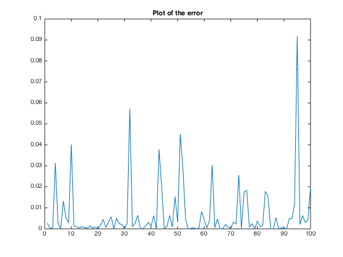

clear; close all;
ellip_bdry_data;
y = ones(100,1);
Xhat = zeros(100,10);
for n = 1:100
Xtemp = [X(1,n)^2, 2*X(1,n)*X(2,n), 2*X(1,n)*X(3,n), 2*X(1,n)*X(4,n), X(2,n)^2, 2*X(2,n)*X(3,n), 2*X(2,n)*X(4,n), X(3,n)^2, 2*X(3,n)*X(4,n), X(4,n)^2];
Xhat(n,:) = Xtemp;
end
ahat = (Xhat'*Xhat)\Xhat'*y;
ahat = ahat';
A = [ahat(1:4); [ahat(2), ahat(5:7)]; ahat(3), ahat(6), ahat(8:9); ahat(4), ahat(7), ahat(9), ahat(10)];
J = norm(Xhat*ahat' - y)^2;
disp(['The mean squared error induced by this choice of matrix A is: ' num2str(J)]);
disp('The eigenvalues can be observed to all be postitive real values. The eigenvalues of A:');
eig(A)
disp('The matrix A:');
A
for i = 1:100
error(i) = (X(:,i)'*A*X(:,i) - 1)^2;
end
plot(error);
title('Plot of the error');
The mean squared error induced by this choice of matrix A is: 0.6995
The eigenvalues can be observed to all be postitive real values. The eigenvalues of A:
ans =
0.0467
0.4211
1.2334
25.6020
The matrix A:
A =
1.4350 0.0509 -2.8708 1.6120
0.0509 0.4143 -1.3842 0.8988
-2.8708 -1.3842 16.1368 -11.8447
1.6120 0.8988 -11.8447 9.3172
